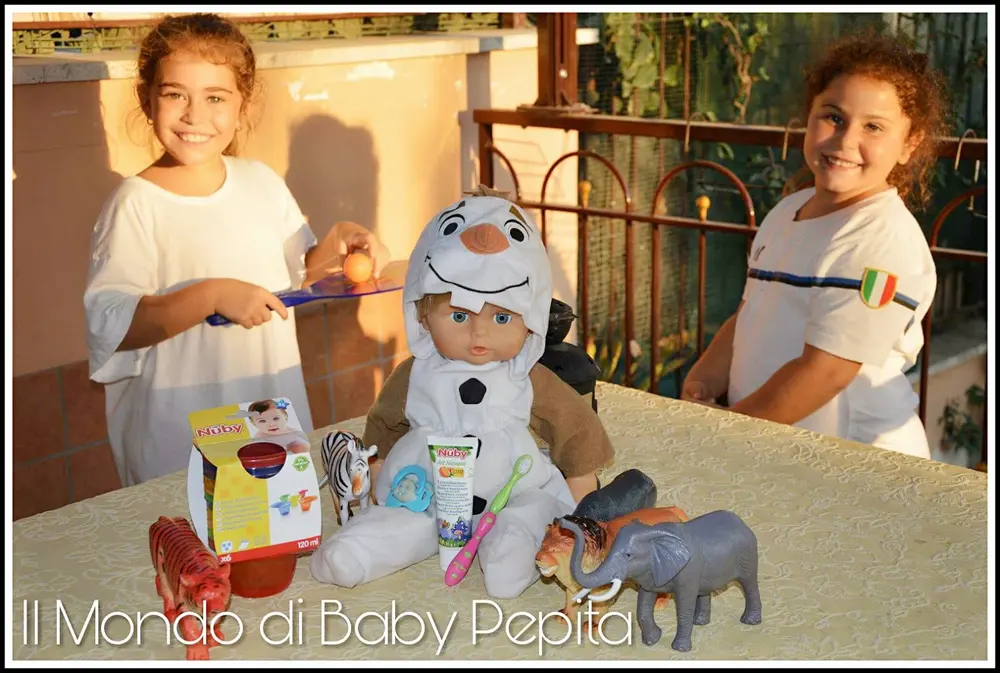
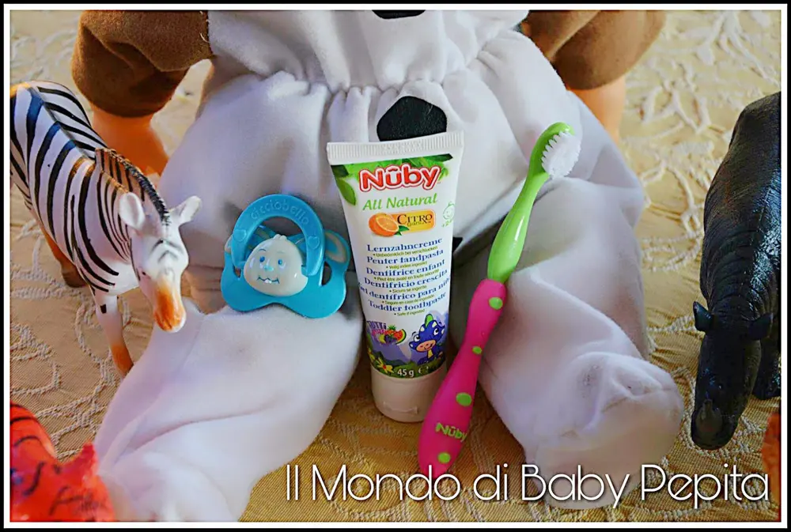
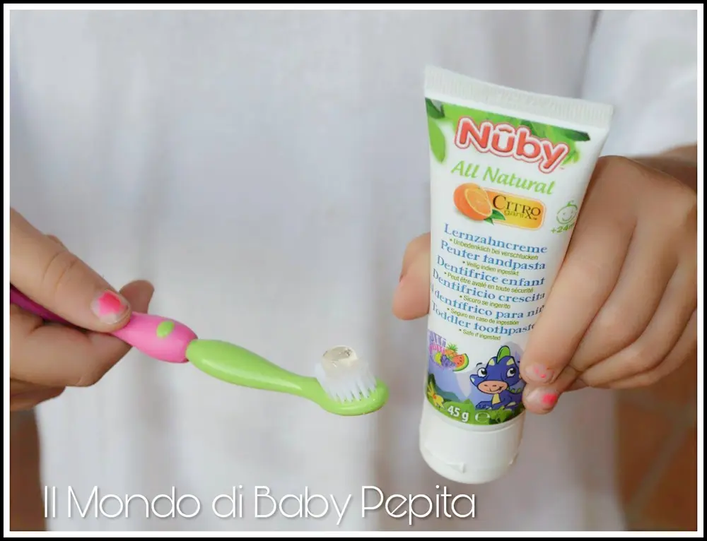
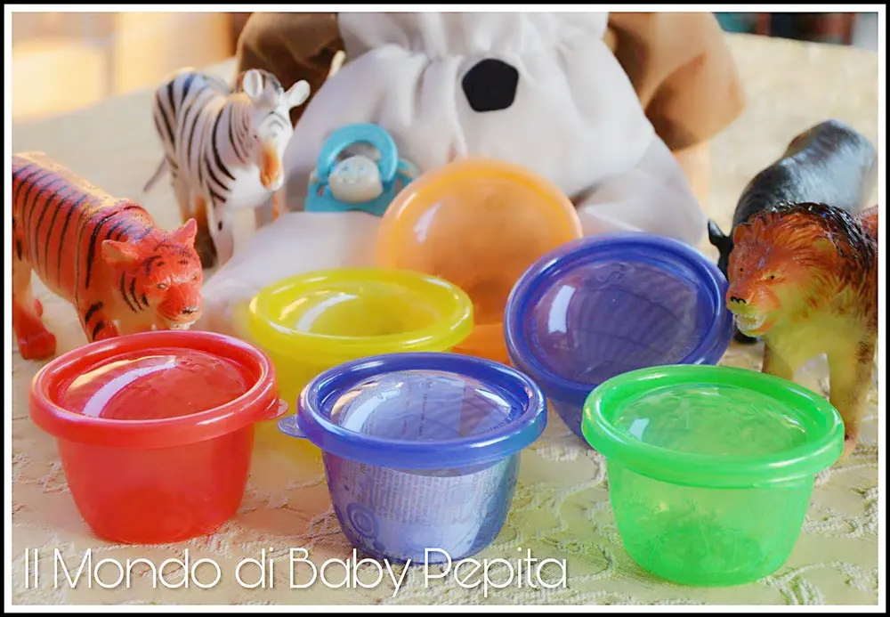
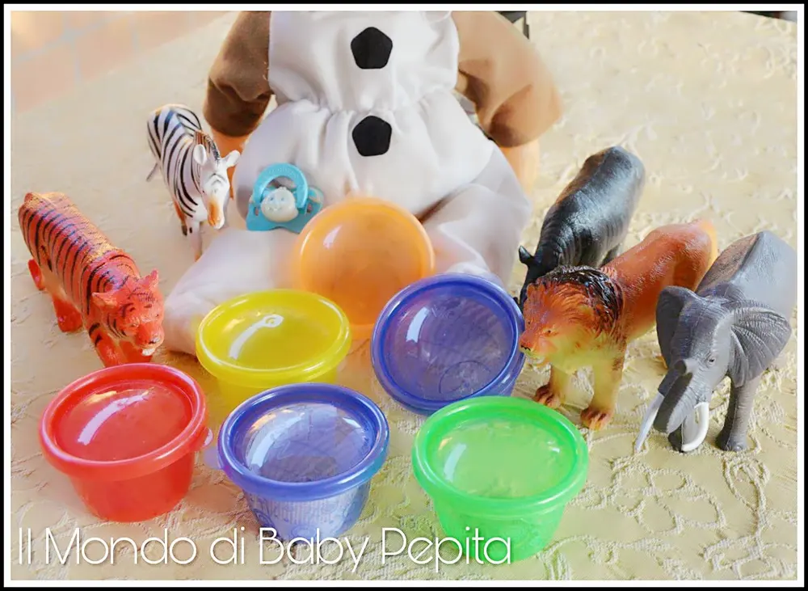
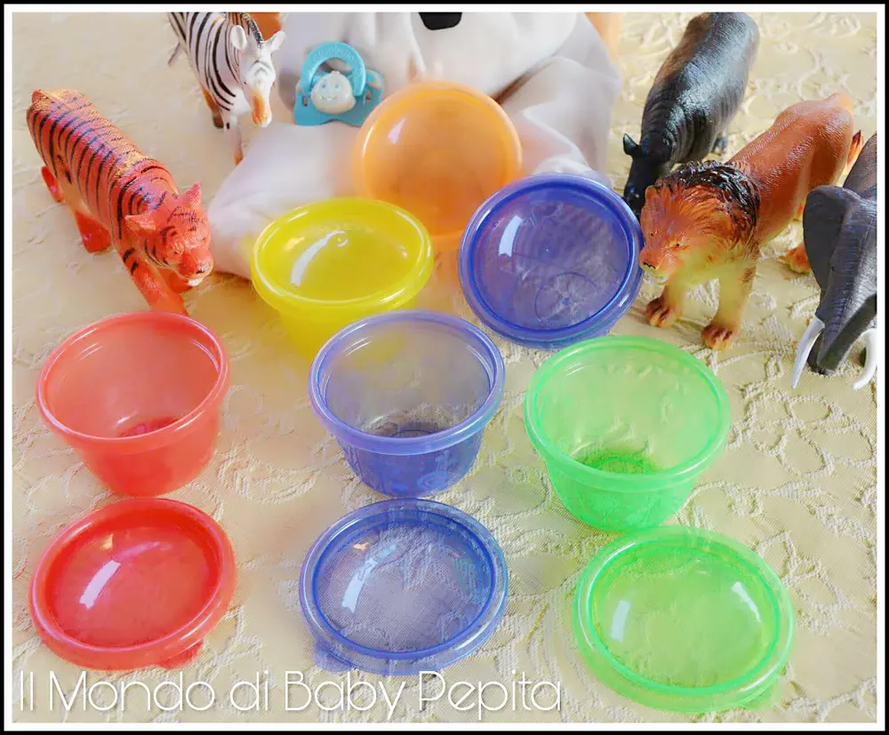

Accessori bambini - NUBY

Accessori bambini: Quante mamme mi seguono? Quante giovani donne con piccoli cuccioli neonati o un pò più grandicelli mi leggono? Beh, oggi mostro un articolo tutto per voi, ovvero per loro, i piccoli :D
Ho conosciuto un'azienda che dal 1970 si dedica a fornire prodotti di buona qualità e sempre al passo con i tempi, ispirati alla natura per rendere la vita dei bambini e dei genitori più semplice, colorata e divertente. Adatto ad ogni fase della loro crescita del nostro bambino, infatti il compito della NUBY è proprio quello di occuparsi dell'alimentazione, lo svezzamento, il rilassamento, il gioco, il bagno e il vivaio. È molto aggiornata con tanto di brevetti in tutte le sue categorie.Quindi possiamo capire che di quest'azienda possiamo tranquillamente fidarci.È un marchio conosciuto e distribuito in oltre 155 paesi di tutto il mondo.Inoltre, come informazione generale, la Nuby ha adottato il progetto per l'alfabetizzazione dei bambini sordi (DCLP) della National Cued Speech Association (Cuedspeech.org).Il logo DCLP possiamo trovarlo infatti sulla maggior parte dei prodotti per bambini, ossia bottiglie, giocattoli, dentiere, pompe del seno e molti articoli medici vari.
Passiamo ora ai prodotti che ho avuto il piacere è l'onore di prodotti: • scodelle per lo svezzamento fun feeding. • set educazione dentale.

Il set educazione dentale che mi è arrivato, è un piccolo spazzolino rosa e verde e il dentifricio che aiuta e insegna al bambino ad una corretta igiene orale.
In primo luogo permette ai genitori di massaggiare in modo delicato le gengive del bambino. O se il bambino è un pochino più grandicello, di insegnargli come usare e spazzolare i denti. Lospazzolino è morbido in silicone e gomma con setole in nylon, è da utilizzare ovviamente solo quando i dentini sono già spuntati. Disponibile in colorazioni diverse per verde/rosa, verde/blu.
Gel dentifricio:
Il gel dentifricio Nuby all natural è un dentifricio del tutto naturale, da un sollievo alle gengive irritate ed è antibatterico.
È un dentifricio senza fluoruoro, para-beni, fenossietanolo e alcool ed è stato studiato e creato specificamente per i bambini a partire dai 24 mesi in poi.
Ha un gusto di aroma tutti-frutti che così il bambino non sentirà quel gusto forte dei dentifrici per adulti ed oltre a divertirsi, imparerà ad avere cura della sua igiene orale.

INGREDIENTI: Acqua, Glycerin, Betaine, Xanthan Gum, Flavour, Bioflavonoids, Caprylic Acid, Citric Acid, Lactic Acid, Levulinic Acid, Potassium Sorbate, Stevia Leaf Extract. Tubetto da 45g
Scodelle per lo svezzamento:
Il set scodelle per lo svezzamento fun feeding sono 6 scodelle di capacità 300ml in diversi colori assortiti tra rosso, verde, giallo, arancione e blu. Ognuna di esse ha il coperchio dello stesso colore della scodellina.

Comodissime per congelare le pappine dei bambini, pratiche anche per il forno a microonde. Funzionali se si vuole anche portare in giro nella borsa del bambino per la frutta per esempio, in quanto sono scodelle ermetiche. Ovviamente con giusta quantità di prodotto per non rischiare rovesciamenti.
Si possono tranquillamente lavare anche in lavastoglie senza problemi.

Insomma, tutto questo colore e praticità fa venir voglia di comprare tante cose della Nuby e soprattutto fa sembrare ancor più semplice crescere un bambino tra i pasti, i giochi e tutte le esigenze che richiede ogni fase del nostro bambino.
Questo prodotto, come già citato sopra, è un marchio che potrete trovare in diversi punti vendita per i bambini, in caso contrario potrete acquistare anche sul sito ogni prodotto e curiosare tra la gamma di articoli che il sito dispone.